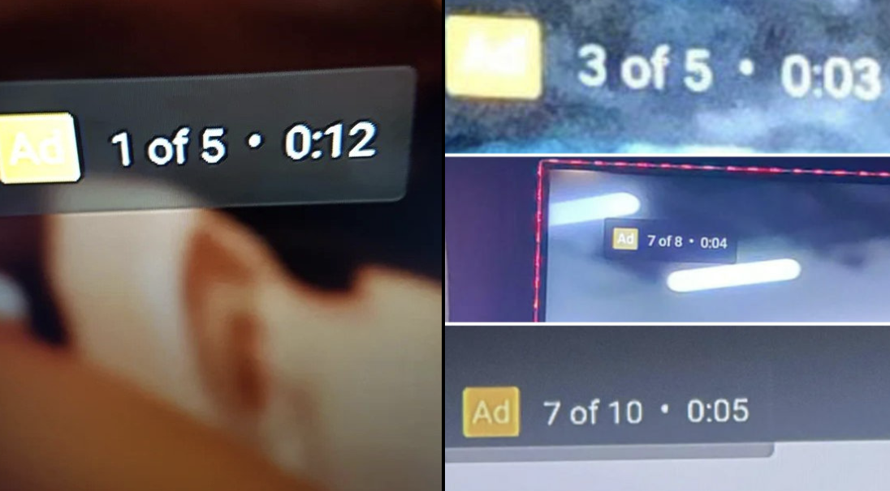
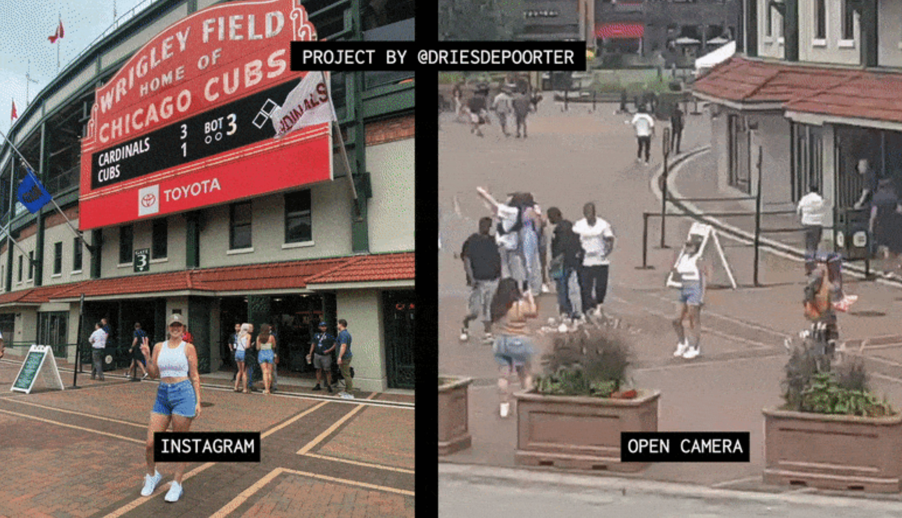
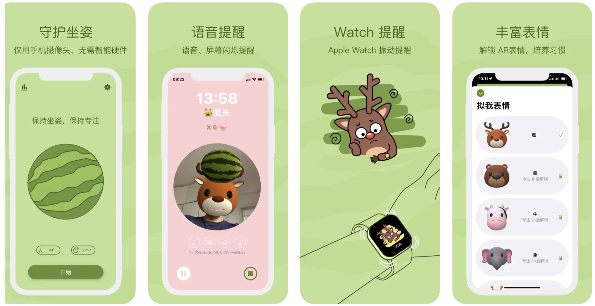
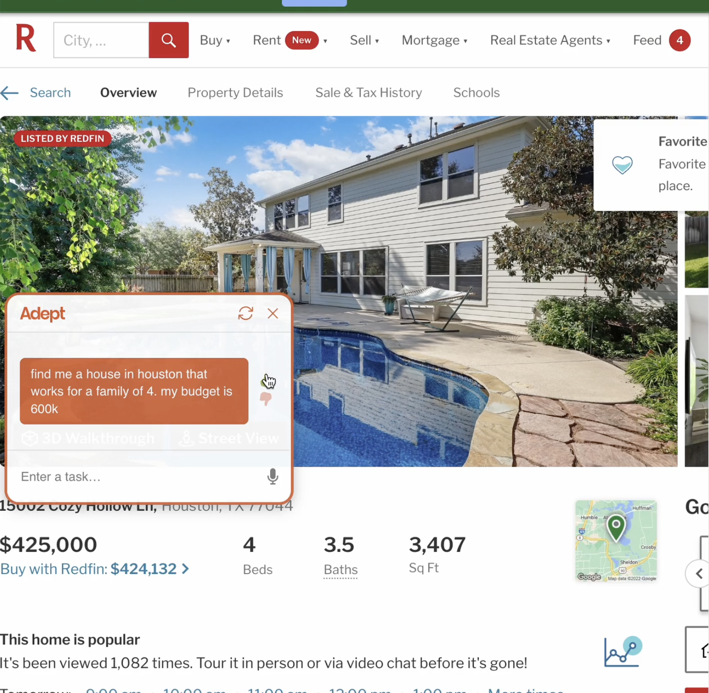
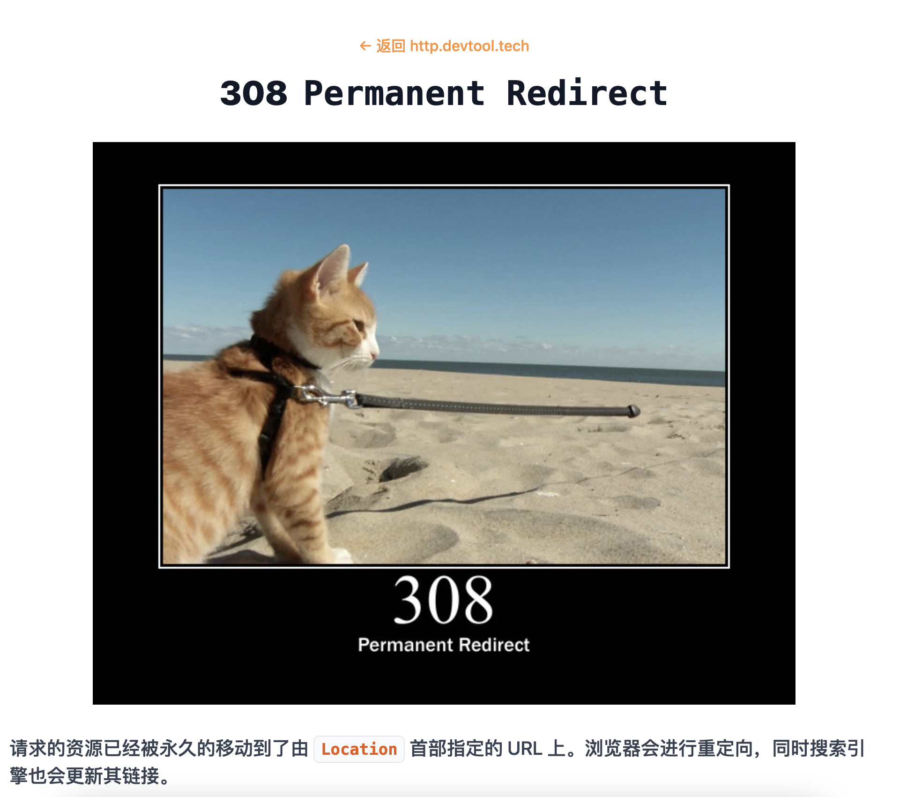
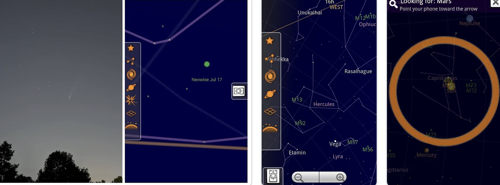
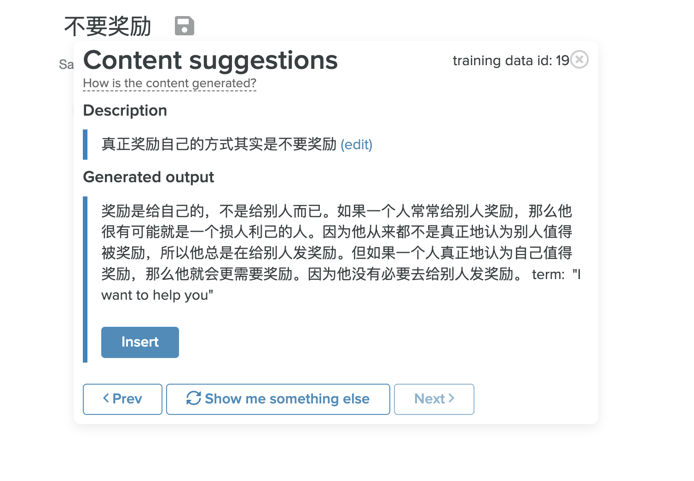

自由职业 vs 全职工作
hackers news 最近有一篇热帖引发热议。你应该为自己工作还是做一份全职工作？觉得其中几个回答还蛮有启发性，转述出来给你看看。
你总是在为一些人工作，无论你有一个大客户，几个中等规模的客户，还是许多小客户。 更多的客户意味着抗风险能力更好，因为即使失去一个客户也无伤大局，当然更好的方式是，有一个良性的获得新客户的流程。 也许一个更大的区别不是就业与自由职业，而是你是否能做你喜欢做的事情，获得报酬的同时兼顾生活–其实不管自由职业还是就业都是有可能实现的。@strogonoff
我希望我能找到一份报酬丰厚、同事和善、成就感满满和具有成长空间的工作，我曾多次尝试去适应。在 35 年的职业生涯中，我最长的一份工作是 4 年。最后我终于明白，我是不可能打工的，这辈子都不可能打工的。@netman21
我有 20 年自由职业的经历，虽然我很享受这种自由，但也是有缺点的（例如没有病假工资）。 我现在在一家大公司工作，我非常享受这种工作。强大的工会保证了我的薪酬比较丰厚、另外还提供了平衡家庭和工作的环境。最开心的是，如果我的孩子需要照顾，我可以获得到一个休息日（悄咪咪告诉你：带薪带孩~）。我很喜欢这里的同事。当我还是自由职业的时候，我偶尔有甲方或者一些合作的人一起做项目，但这和长期一起共事的同事关系，还是有些不同的。 最重要的，和其他人说的一样，做你喜欢的事情！@rawfan
简单报
世界上的树木比35年前要多
根据科学杂志《自然》上的一篇论文，在过去35年里，全世界的树木覆盖面积增加了 224 万平方公里。其他地区的树木覆盖率的增加超过了热带地区的树木覆盖率的损失，这是因为欧洲、亚洲和北美部分地区放弃了农业，气温上升使森林更加靠近南北两极，另外中国的大规模植树计划也贡献很大。但可悲的是，研究也证实了我们星球上最具有生物多样性的生态系统大规模损失，正在遭受毁灭性打击，特别是热带雨林地区。
Youtube 或将增加不可跳过的片头广告

距多名用户反馈，Youtube 正在测试新的广告形式，在影片播放之前，出现 5-10s 不可跳过的广告。
他的 ins 照片是如何拍的？

Dries Depoorter 利用公开摄像头收集视频数据，并通过程序采集 instagram 上位于这些位置附近的照片，然后通过技术得到该照片拍摄现场的视频片段。出于好奇，我发现该作者做了更多有趣的项目，比如这个检测比利时政治家开会时摸鱼的项目
高薪科技公司从业者花巨额增高
拉斯维加斯一位专门从事腿部延长手术的美容外科医生告诉《GQ》杂志，他的许多客户是科技工作者。手术的工作原理是：折断股骨或大腿骨，并将金属钉子插入其中，在接下来的三个月的时间里，这些钉子每天都会通过一个磁性遥控器延长一点点。手术的费用在 7 万到 15 万美元之间，这取决于病人是否想长3、4、5或6英寸。因为费用不低，他的客户都是高薪群体，这其中又以来自谷歌、亚马逊、Facebook、微软的硅谷精英居多。
新玩意
坐姿检测的 AR 应用

一款支持 iPhone 和 iPad 的坐姿检测的 AR 应用。帮助用户保持正确的坐姿。对于经常久坐的上班族来说，还是蛮刚需的，支持多种语音、闪光和 Apple Watch 震动等多种提醒方式。
Adept

adept 是一个机器学习的实验性产品，创作性地将人和机器交互结合到一起，利用人工智能技术解决一些通用智能的问题。想象一下这个场景，你打算换一个通勤时间在 1 小时内，屋内面积在 35 ㎡，住房预算在 2-3k 的房子。这些内容直接说出来给机器就好，剩下的交由机器给你全网检索，并汇总所有的检索结果给到你。你只需要告诉机器你的需求，而机器比你更擅长与机器打交道，诸如检索内容，找到结果，汇总不同房子之间的评分，最后把结果通知你。这里面你与机器交互的成本，信息收集和处理的成本，全部交由机器处理，你只负责做决策。
http 状态码查询工具

可以通过https://http.devtool.tech/<code> 直接查看某个状态码的文档，另外通过一张猫片加深这个状态的含义。同时作者贴心的将该状态码的相关资料也贴出来了。
sky map

早期谷歌出品过一款植物识别的工具，现在又来了一款天体识别的神器。手机上装上这款 app，只要将手机对准天体，它就会将这款天体的名字告诉你
Contentedge 智能写作辅助器


ContentEdge 的人工智能平台能够通过简要的信息，生成看起来像是人写的文字。对于那些小小小微企业，没有专门团队来制作内容的公司，或许是一个不错的选择，试用了下，对于中文目前还是有点不太智能。